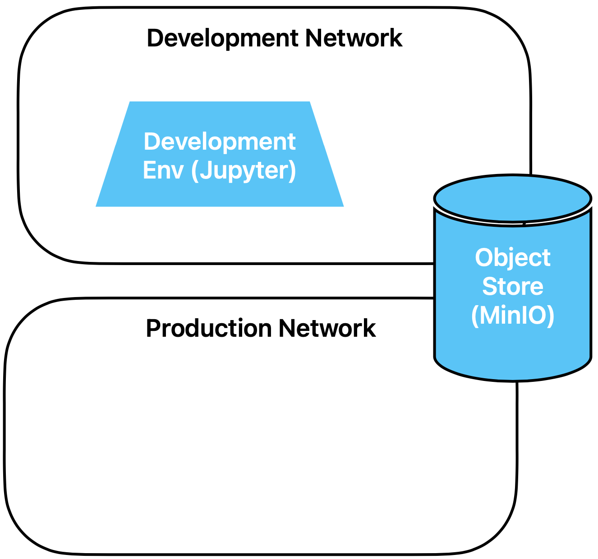
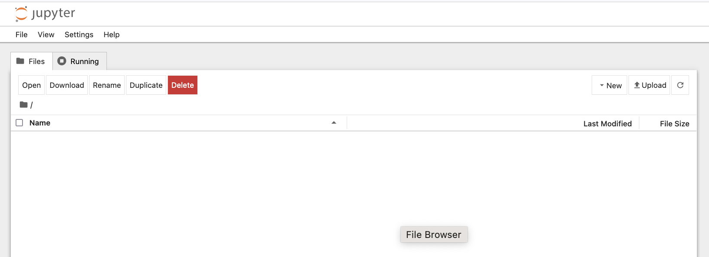
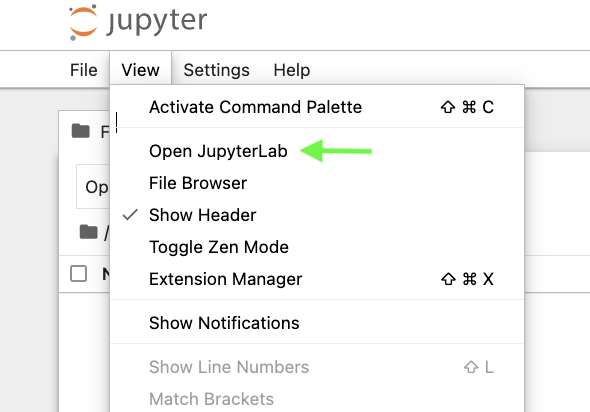
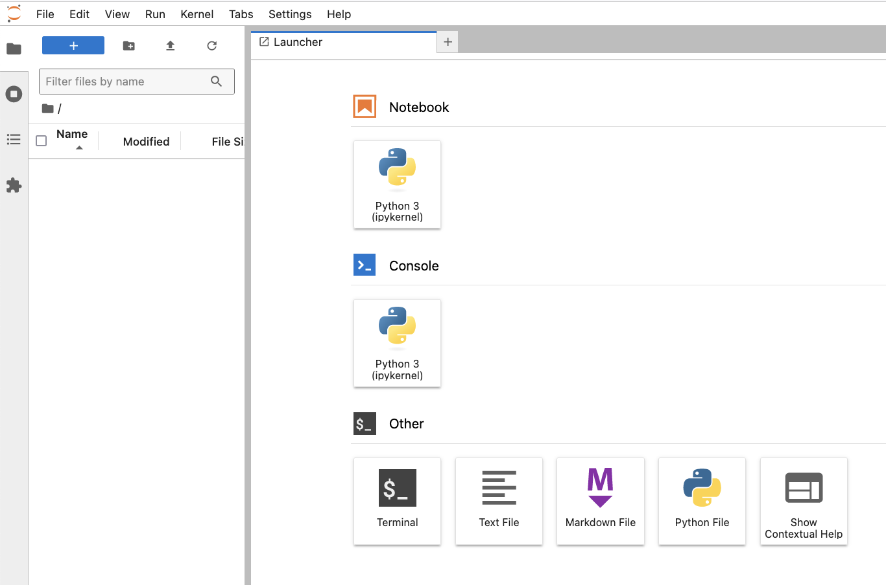

Exercise Structure
The exercises are provided as HTML files.
Some exercises come as simple questions. For most exercises, however,
a Docker container must be configured or code must be written. The answer can
be compared directly with the suggested solution.
Exercise 1: Base Infrastructure
At the beginning of the workshop, the infrastructure looks as shown in the following diagram.

Service Definition
We therefore start with two separate Docker networks and two containers:
- The object store
- The development environment in the form of a JupyterLab server
Under the paths
- exercises/
- exercises/containers/development_env/
- exercises/containers/objectstore/
you will find the Dockerfiles and docker-compose.yml files of the development
environment and
the object store. Check them out to get the first idea of how the exercise infrastructure is set
up. You can ignore the other Dockerfiles and compose
files for now. How is the hierarchy of the Docker files structured?
Suggested solution
In the top-level compose file docker-compose.yml the two
networks are defined via include. After that, the compose files of the individual
services are listed.
The services are then defined in the subfolder containers/. Each service has
its own folder. Some services only need a docker-compose.yml,
others additionally need a Dockerfile.
Attention: Some services are still commented out. They are not needed yet, we
will activate them step by step later.
Now start all containers. This takes a moment the first time, as the images must be loaded.
Suggested solution
To do this, execute the following command in the directory exercises/, where
the top-level compose file docker-compose.yml is located
docker compose up
The process remains in the foreground and you can leave the terminal window open.
Later you can simply stop the process with ctrl-c.
You can also execute docker compose up -d to send the process to the
background.
Docker Networks
We simulate a separation of development environment and production environment by defining two
Docker networks and assigning each container to either one or the other of the two
networks. Only services that run productively and must also be reachable from the development
environment
are assigned to both networks.
Name some such services that should typically be assigned to both the development and
production network.
Suggested solution
Some possible services that must be accessible from both networks are
- Object Store
- Git
- Docker Registry
- Model Registry
Object Store
We use an object store for data storage. An object store stores data as
independent objects that consist of three components: a unique ID, metadata and
the actual data (e.g. files, images or videos). Unlike traditional
file systems, objects are not hierarchically organized. Access usually occurs via APIs,
which facilitates integration into distributed systems.
A block store, on the other hand, stores data in blocks of fixed size that are stored in a
structured
arrangement on storage media such as hard drives or SSDs. This structure
enables fast read and write operations, making block storage particularly suitable for
applications such as
databases or operating systems that require direct and high-performance data access.
The main difference lies in the application: Object stores are optimized for storing
and managing data in large, scalable systems, while block storage
is designed for high performance.
For data storage we use a local object store that offers an S3-compatible API.
As a solution we use
MinIO, an open-source product that
allows us
to set up a locally running
object store with minimal configuration. With MinIO we store training data,
artifacts from the training process, features and predictions.
Look at the Docker compose file of the object store. Which local directory is used for
storing the object store data?
Suggested solution
In the docker-compose file of minio (containers/objectstore/docker-compose.yml)
you can find the volume
mount:
volumes:
- ../../s3_data:/data
From this you can see that the data is stored outside the container in the local
directory
s3_data (below the folder exercises/). Inside
the container the data is located in the directory
/data. In the command directive you can see that the minio daemon is given the
directory /data as an argument at startup:
command: server --address "0.0.0.0:9000" /data
Attention: Do not directly access the data inside the s3_data/ folder. This data is
internal to MinIO and can only be accessed through APIs.
Development Environment
We simulate the development environment in which data scientists perform analyses and
develop models with a single container that provides a Jupyter environment.
This is completely sufficient in the context of the exercises. In reality, a
development environment would of course be somewhat more complex, at least an IDE and GPUs would
also need to be available in addition to a
Jupyter environment.
Look at the docker-compose file of the development environment to find the URL and port
via which you access Jupyterlab.
Suggested solution
In the file development_env/docker-compose.yml you find the section
ports:
- 127.0.0.1:8080:8888
The port on which Jupyterlab runs in the container is 8888. It is mapped to port
8080 outside the container. So you can access the development environment with the
browser via port 8080.
Access the development environment via browser. If you are working locally, you can access it
via
127.0.0.1:8080. If you are working with Github Codespaces, this port
will be automatically forwarded from the cloud, you can see all
forwarded ports via the PORTS tab (next to the TERMINAL tab) in
Codespaces. At the moment, only the port of the development environment (dev-env) is listed,
more services will be added later.
By right-clicking on dev-env you can open it in the browser.
You can log in directly without having to specify a token
or other credentials. This was configured this way for the exercises for convenience.
In a real installation, authorization and
authentication should of course be activated.
Try to find out how or where authorization for Jupyter was deactivated.
Suggested solution
You can find the configuration directly in the Dockerfile:
# generate a config directory and the default config
RUN jupyter notebook --generate-config
# configure jupyter for easy access (don't do this in production!!!)
RUN echo "c.NotebookApp.open_browser = False" >>
/root/.jupyter/jupyter_notebook_config.py && \
echo "c.JupyterApp.answer_yes = True" >> /root/.jupyter/jupyter_notebook_config.py
&& \
echo "c.NotebookApp.ip = '*'" >> /root/.jupyter/jupyter_notebook_config.py && \
echo "c.NotebookApp.allow_origin = '*'" >> /root/.jupyter/jupyter_notebook_config.py
&& \
echo "c.NotebookApp.token = ''" >> /root/.jupyter/jupyter_notebook_config.py && \
echo "c.NotebookApp.password = ''" >> /root/.jupyter/jupyter_notebook_config.py
Now access the development environment with your browser. You should see something like the
following:

You can also open Jupyterlab if you prefer it to the standard Jupyter environment:


Now use the development environment to create a new Jupyter notebook. Name it
`hello_world.ipynb` and have it output a Hello World.
Suggested solution
You can do this even without a suggested solution ;-)
Reading and Writing from the Object Store
We use
s3fs to write files to the object store and read from it. You
can find the documentation
here.
Now open a new notebook in the development environment (or recycle the previous
helloworld notebook) to get a little practice working with the object store:
- Create a bucket
- Write a text file to this bucket
- Display the contents of the bucket
- Try out some other commands from the API
Suggested solution
Here is a code example.
import s3fs
# create a reference to the object store
s3 = s3fs.S3FileSystem()
# create a bucket
s3.mkdir("mybucket")
# write a file. According to the documentation, only binary mode works, although writing a string directly seems to work as well
with s3.open('mybucket/hello.txt', 'wb') as f:
f.write(r'Hello World'.encode('utf-8'))
# some more commands
s3.ls('mybucket')
s3.du('mybucket/hello.txt')
Your objects created this way are persisted in the s3_data/ directory and thus also survive
a restart of the container.
Can you explain how authorization and the connection to the object store works? How
are URL and credentials passed?
Suggested solution
In the docker-compose file of the development environment you see that the following
environment variables are set:
environment:
- FSSPEC_S3_KEY=${MINIO_ADMIN}
- FSSPEC_S3_SECRET=${MINIO_SECRET}
- FSSPEC_S3_ENDPOINT_URL=${MINIO_ENDPOINT}
If you search the s3fs documentation for the first of these three variables, you
find that these variables, if present, are used when creating the s3 object with
s3fs.S3FileSystem() to set the credentials and the endpoint.
That's why you didn't have to explicitly specify this info in the above exercise.
If you now look at the docker-compose file of the object store, you see that the
server is told at startup to listen on port 9000 and the username and password
of the root user are communicated via environment variables. We use this user for
everything here for
simplicity, which of course is not done in practice.
command: server --address "0.0.0.0:9000" /data
hostname: objectstore
expose:
- "9000"
environment:
- MINIO_ROOT_USER=${MINIO_ADMIN}
- MINIO_ROOT_PASSWORD=${MINIO_SECRET}
And where are username, secret and endpoint actually set?
Suggested solution
The actual values for password and endpoint are set in a .env file:
$ cat .env
MINIO_ADMIN=xxx
MINIO_SECRET=xxx
MINIO_ENDPOINT=http://objectstore:9000
Docker-compose uses
this .env file to fill in the placeholders accordingly.
Summary
So we start with the following infrastructure:
The implementation of the exercises takes place in containers that are assigned to the Docker
networks
Development or Production.
So far we have the object store, which can be used from both networks, and the
development environment, which only has access to the development network.
More services will be added during the workshop.
You can now continue with the next exercise:
07_A_simple_model